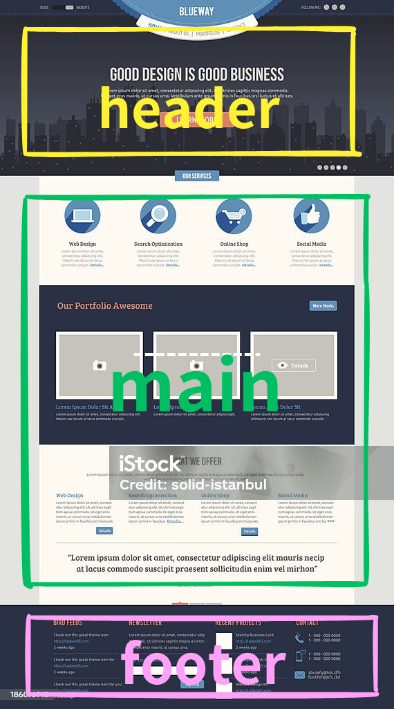

Webサイト
作成の手順
目次
企画と計画

まずは、webサイトの基本的な骨組みと目的を定めます。
1.目的と目標の設定
ウェブサイトの主要な目的を明確にします。
例えば、製品販売なら「月間売上を10%増加させる」、情報提供なら「月間訪問者数を1万人に増加させる」といった具体的な目標を設定します。
これにより、サイト制作の方向性が明確になります。目標はSMART（Specific, Measurable, Achievable, Relevant, Time-bound）で設定することが重要です。以下の表に、目的の例とその達成目標を示します。
| 目的 | 達成目表 |
|---|---|
| 製品販売 | 月間売上を10%増加させる |
| 情報提供 | 月間訪問者数を1万人に増加させる |
| ポートフォリオの展示 | 月間問い合わせ数を20件に増加させる |
2.ペルソナの設定
ウェブサイトの訪問者が誰であるかを特定します。例えば、若年層向けにはトレンディなデザイン、ビジネスパーソン向けにはプロフェッショナルなデザインが求められます。ペルソナの具体例として、年齢層、性別、興味関心、地域などを考慮します。
これにより、訪問者のニーズに応じたコンテンツやデザインを提供することができます。以下のような要素を考慮します。
・年齢: 18-24歳、25-34歳、35-44歳、45-54歳、55歳以上
・性別: 男性、女性、その他
・興味: テクノロジー、ファッション、健康、ビジネスなど
・地域: 国内、国外、特定の都市や地域
3.サイトマップの作成
ウェブサイトの全体的な構造とページの階層を決定します。
これにより、ユーザーが簡単に情報を見つけられるようになります。例えば、トップページをつくるなら、お知らせ、企業情報、サービス、ブログ、お問い合わせなどの主要なページを設定します。
サイトマップは、情報の流れとナビゲーションの基盤を提供し、開発の指針となります。以下の図は、基本的なサイトマップの例です。

デザイン

デザインフェーズでは、ウェブサイトのビジュアルとユーザー体験を構築します。
1.ワイヤーフレームの作成
ページレイアウトの初期段階としてワイヤーフレームを作成します。
これは、コンテンツの配置とページ構造をシンプルに示すためのものです。
これにより、デザインや開発チームがページのレイアウトを理解しやすくなります。例えば、ヘッダー、メインコンテンツ、サイドバー、フッターの配置を示します。以下の図は、ホームページのワイヤーフレームの例です。

2.ビジュアルデザイン
カラースキーム、フォント、画像、その他の視覚要素を決定し、全体的なデザインを完成させます。
この段階では、ブランドのアイデンティティとユーザーエクスペリエンスを考慮します。例えば、メインカラー、アクセントカラー、フォントスタイルを選定します。
これにより、ユーザーにとって魅力的で使いやすいサイトが完成します。以下の表は、デザイン要素の例です。
| 要素 | 具体例 |
|---|---|
| カラースキーム | メインカラー: #3498db, アクセントカラー: #2ecc71 |
| フォント | 見出し: Roboto, 本文: Arial |
| 画像 | ヒーローイメージ、製品写真、アイコン |
3.ユーザーエクスペリエンスの考慮
ユーザーがウェブサイトをどのように操作するかを考慮し、使いやすさや直感的なナビゲーションを設計に組み込みます。
例えば、重要な情報やリンクを目立つ位置に配置し、簡単にアクセスできるようにします。ユーザーが直感的にサイトを操作できるデザインを目指します。ナビゲーションメニューの配置やボタンのデザイン、ページ遷移のスムーズさを重視します。例えば、以下の点に注意します。
・ナビゲーション: メニューは常に画面の上部に固定し、アクセスしやすくする。
・コールトゥアクション: 重要なアクションボタンは目立つ色で配置し、ユーザーがすぐに見つけられるようにする。
開発

デザインが確定したら、開発フェーズに移ります。
1.HTML/CSSコーディング
基本的なウェブページを構築するためにHTMLを使用し、デザインを適用するためにCSSを使用します。HTMLはコンテンツの構造を定義し、CSSはビジュアルデザインを適用します。コーディングの流れとしては以下の通りです。
1.ファイルフォルダを作る
2.レイアウトを考える
3.HTMLを書く
4.CSSを書く
1.ファイルフォルダを作る
まず初めに、必要なファイル、フォルダを準備します。必要なファイル、フォルダは作成するwebサイトによって変わりますが、大体の場合はプロジェクトのフォルダの中に入口であるindex.htmlがあって、CSSを格納する「css」フォルダ、画像を格納する「images」フォルダ、JavaScriptを格納する「js」フォルダが必要になります。
コーディングを始める前に、作成するwebサイトの構造を確認します。webサイト、ページは基本的にはブロックの組み合わせです。
2.レイアウトを考える
まずはざっくりとでいいのでどういう枠組みで構成されているか考えます。
その際にclassやidを割り振っておくとCSSを書くときに楽です。構造をしっかりと整理・把握するクセを付けることで、コーディングを迷うことなく進めることができます。
3.HTMLを書く
実際にHTMLを書いていきます。基本的な内容は下記になります。
はじめに、head内にwebサイト、ページの情報を記述します。
続いて、bodyの中身をコーディングします。
この部分が実際にページとしてみる部分になります。
今回は「レイアウトを考える」で考えた通り、レイアウト部分（ヘッダー、コンテンツ、フッター）を書きます。
基本的な組み方の流れは「大枠を作る」→大枠の中でさらに「細かく分解する」を繰り返してコーディングします。
例）ヘッダーの場合
ヘッダーの中には「ロゴ」、「ナビゲーション」があるかと思います。
次に「ナビゲーション」の中身を見てみます。
「サービス」ページへのリンク、「会社概要」ページへのリンクといった具合に分解できます。
そしてレイアウトが完成したら実際に表示させたい画像・テキストをはめ込んでいきます。
4.CSSを書く
「HTMLを書く」で書いたコードに対して装飾します。慣れるまではブロック構造が分かりやすいように色付けして作業するといいかもしれません。
※サンプルデザインを基に要素を適当に書いてます。
2.レスポンシブデザインの対応
モバイルデバイスや異なる画面サイズに対応するために、レスポンシブデザインを適用します。メディアクエリを使用して、画面サイズに応じたスタイルを適用します。
これにより、どのデバイスでも快適に閲覧できるウェブサイトが完成します。レスポンシブデザインは、ユーザー体験を向上させ、検索エンジン最適化にも寄与します。
テストと公開

ウェブサイトが完成したら、公開前に徹底的にテストを行います。
1.ブラウザテスト
ウェブサイトが主要なブラウザ（Chrome、Firefox、Safari、Edgeなど）で正しく表示されるかを確認します。各ブラウザでの表示や動作をテストし、クロスブラウザ互換性を確保します。
これにより、どのブラウザでも一貫したユーザー体験を提供できます。以下の表は、テストするブラウザとそのバージョンの例です。
| ブラウザ | バージョン |
|---|---|
| Chrome | 最新版 |
| Firefox | 最新版 |
| Safari | 最新版 |
| Edge | 最新版 |
2.SEO対策
検索エンジンでのランキングを向上させるために、SEO（検索エンジン最適化）を実施します。以下の要素を最適化します。メタタグの設定、キーワードの適切な配置、サイトマップの提出などを行います。
これにより、検索エンジンからのトラフィックを増加させることができます。以下の要素を最適化します。
・メタタグ: タイトルタグ、メタディスクリプションを最適化し、キーワードを含めます。
・キーワード: 主要なキーワードをページのタイトル、見出し、本文に適切に配置します。
・サイトマップ: 検索エンジンに送信するXMLサイトマップを作成します。
3.公開準備
ウェブホスティングサービスを選択し、ドメインを設定し、ウェブサイトを公開します。ホスティングサービスにファイルをアップロードし、DNS設定を行います。
これにより、ウェブサイトがインターネット上でアクセス可能になります。公開前には、すべてのリンクと機能を再確認します。以下の手順を含みます。
1.ホスティングサービスの選択: 信頼性が高く、必要なリソースを提供するホスティングサービスを選びます。
2.ドメインの設定: ウェブサイトに適したドメイン名を選択し、設定します。
3.ファイルのアップロード: FTPやホスティングサービスのファイルマネージャを使用してウェブサイトのファイルをアップロードします。
4.DNS設定: ドメインのDNS設定を行い、正しくウェブサイトにアクセスできるようにします。
メンテナンス

ウェブホスティングサービスを選択し、ドメインを設定し、ウェブサイトを公開します。
1.定期的な更新
コンテンツの追加や更新を定期的に行い、ウェブサイトを最新の状態に保ちます。新しいブログ投稿の追加、製品情報の更新などを行います。
これにより、訪問者が常に新しい情報を得られるようになります。継続的なコンテンツ更新はSEOにも有益です。以下のようなアクションを行います。
・新しいブログ投稿の追加: 定期的に新しい記事を追加し、SEO対策を強化します。
・製品情報の更新: 新しい製品やサービスの情報を追加し、既存の情報を更新します。
2.ユーザーフィードバックの収集と改善
ユーザーからのフィードバックを収集し、ウェブサイトの改善に役立てます。アンケートの実施、コメントやメールの確認、アクセス解析ツールの使用などを行います。
これにより、ユーザーのニーズを理解し、サイトの改善に活かすことができます。以下のような方法でフィードバックを収集します。
・アンケートの実施: ウェブサイト上でアンケートを実施し、ユーザーの意見を集めます。
・コメントやメールの確認: ユーザーからのコメントやメールを定期的に確認し、対応します。
・アクセス解析ツールの使用: Google Analytics4などのアクセス解析ツールを使用して、ユーザーの行動を分析します。